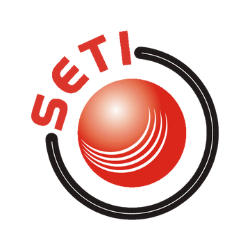
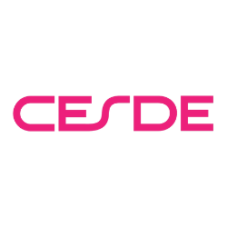

Secure by default
CI/CD controls, vulnerability feedback, IAM hygiene and audit-ready delivery workflows.
Edward Suarez / Senior DevSecOps Engineer / Cloud Infrastructure / SRE
I design, automate and operate AWS, Kubernetes and OpenShift platforms where reliability, compliance and deployment speed are treated as engineering outcomes, not afterthoughts.
Years across DevOps, backend and security-focused platform work
Cloud instances orchestrated, governed and improved
Deployment time reduction in banking delivery pipelines
Compliance uplift through process, automation and evidence
Profile
I am Edward Mauricio Suarez, a DevSecOps engineer focused on production-grade cloud platforms. Based in Medellin, Colombia, my work sits where software delivery, infrastructure, security and operations meet: building repeatable systems, reducing manual risk and making platforms observable enough to trust.
CI/CD controls, vulnerability feedback, IAM hygiene and audit-ready delivery workflows.
Infrastructure as code, repeatable environments and pragmatic automation that removes toil.
Observability, incident thinking and resilience patterns for critical business systems.
Go and service-oriented engineering experience that keeps platform decisions close to code.
Systems I Build
A senior DevSecOps profile should make the risk model legible. These are the cloud infrastructure, CI/CD, Kubernetes, OpenShift and SRE systems I am hired to improve, harden or build from the ground up.
Pipeline design, quality gates, secrets handling, automated checks and release flows with evidence.
AWS environments designed for scale, cost awareness, security boundaries and predictable operations.
Container platforms with deployment consistency, service health, policy controls and operational clarity.
Monitoring, tracing, alerting and resilience practices that help teams understand systems before they fail.
Experience
Current and recent DevSecOps, SRE and cloud engineering work across banking, marketplace platforms and infrastructure consulting.
UST Global / Banco Santander
Orchestrating delivery and operational practices for 50+ microservices, improving deployment time from 90 minutes to 30 minutes and strengthening compliance outcomes.
Pragma
Implemented reliability and security practices across cloud-native environments, including observability, Chaos Engineering and platform automation.
Mercado Libre
Built backend services with Go while deepening operational awareness around distributed systems, production delivery and platform reliability.
SETI S.A.S.
Automated cloud deployments with CloudFormation and operational scripting, reducing manual intervention and improving release consistency.
Stack
AWS, EC2, RDS, S3, VPC, IAM, Terraform, CloudFormation, Ansible
Kubernetes, OpenShift, Docker, GitOps, container security
Jenkins, GitHub Actions, GitLab CI, release automation, quality gates
DevSecOps controls, vulnerability management, secrets, compliance evidence
Dynatrace, monitoring, alerting, incident feedback, chaos engineering
Go, Python, Bash, Linux, APIs, backend services
Proof
Reduced deployment duration by 66% while supporting an ecosystem of 50+ microservices and improving delivery governance.
Active cloud foundation credential, with AWS Solutions Architect Associate listed as in progress.
View credentialLinkedIn recommendations highlight security curiosity, Go/AWS/Linux skills, ownership and strong collaboration across product and engineering teams.
Read on LinkedIn

Consulting
Pipeline, cloud and operational review with prioritized findings and remediation roadmap.
Hands-on buildout for infrastructure automation, delivery workflows and runtime observability.
Focused improvement cycle for monitoring, alerts, incident readiness and service resilience.
Contact
Best fit: teams running AWS, Kubernetes/OpenShift, CI/CD-heavy delivery, regulated workloads or infrastructure that has outgrown informal operations.